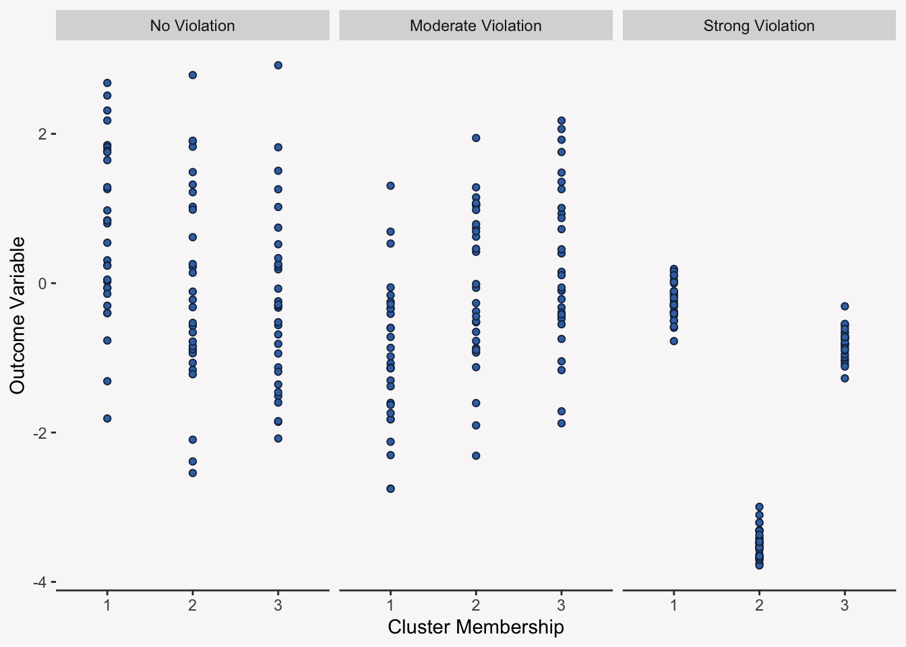
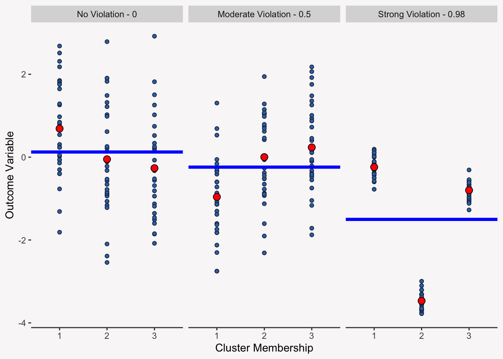
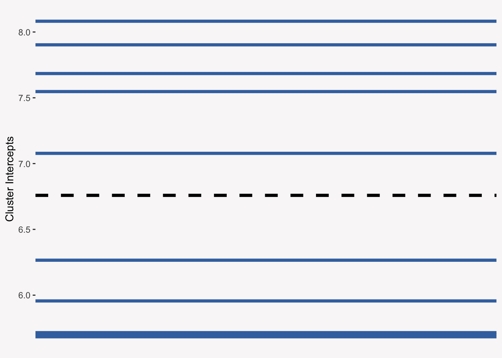
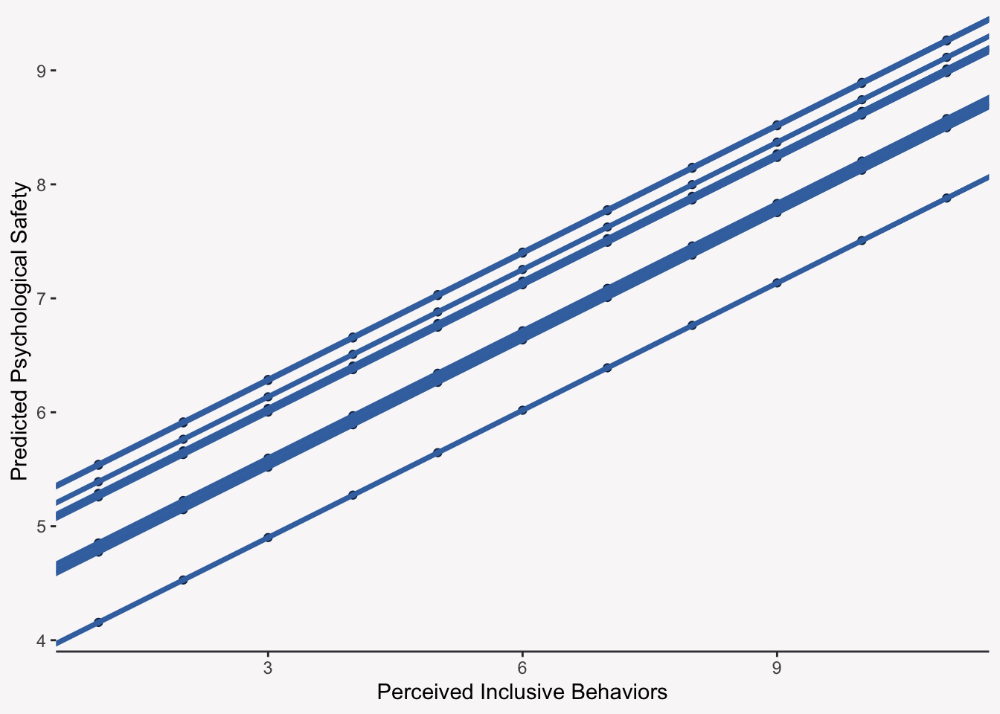

# A tibble: 800 × 3
team_id x_inc_lead y_psych_safe
<int> <dbl> <dbl>
1 1 6.08 8.37
2 1 6.67 7.15
3 1 7.19 7.83
4 1 5.34 7.39
5 1 5.77 7.2
6 1 6.63 8.01
7 1 6.96 7.09
8 1 7.26 7.37
9 1 5.74 7.07
10 1 5.42 7.75
# ℹ 790 more rowsClustered Data and the LMER Model
Overview for Today
Today we will be learning about:
- The effects clustered designs can have on your statistical models
- The Linear Mixed-Effects Regression (LMER) Model
What are Clustered Data Structures?
Clustered data structures occur when your data is nested within in a higher-level structure (a cluster):
- Employees nested within a team (team = cluster)
- Students nested within a classroom (classroom = cluster)
- Repeated measurements on an individual (individual = cluster)
Our Data Example
You work for an organization that is interested in understanding how the inclusive behaviors of a team’s leader impacts their team’s perceptions of psychological safety—the shared belief that it is OK to take risks, speak up, or admit mistakes without fear of negative consequences.
The Impact of Clustered Designs
In our example, employees are clustered within a team leader. What impact could this have on the data we collect? Do you think that employees who report to the same leader are more similar than employees who report to a different leader?
When Data Are Not Independent
Clustered data structures tend to violate the regression assumption of independent data. That is, to use regular linear regression we have to assume that we can not learn about person A’s score on an outcome variable by looking at person B’s score on that outcome variable.
Think about it this way: Are you more similar to your family members than you are a stranger?
Visualizing Non-Independence

Partitioning Variance into Within and Between-Clusters
Non-independence occurs when some of the total variance in our outcome variable is due to belonging to a given cluster or group. If we selected a person at random from Cluster A and a person at random from Cluster B, there score on an outcome variable will differ partly because they are different people (Within-Cluster Variance) and partly because they belong to different clusters (Between-Cluster Variance).
If there was no between-cluster difference, then the scores would only differ because we were looking at two different people.
Partitioning Variance into Within and Between-Clusters
The plot below shows the individual outcome scores by cluster (blue points), the cluster means for each cluster (red points), and the grand (or overall) mean (the blue line).
Warning: Using `size` aesthetic for lines was deprecated in ggplot2 3.4.0.
ℹ Please use `linewidth` instead.Quantifying Non-Independence with the ICC
The ICC or Intraclass Correlation Coefficient tells us how correlated two randomly selected scores from the same cluster are:
\[r_{1, 2}=\text{ICC}=\frac{\text{Between Cluster Variance}}{\text{Total Variance}}\]
Quantifying Non-Independence with the ICC

Modeling Non-Independence with LMER Models
We need to use Linear Mixed-Effects Regression Models to model data when the independence data has been violated.
LMER models are also known as:
- Multilevel Models (MLM)
- Hierarchical Linear Models (HLM)
- Random Coefficient Models (RCM)
The Unconditional Random-Intercept Model
The LMER model without any predictors can be written as:
\[\text{Level 1:} \space Y_{ij} = \beta_{0j} + r_{ij}\] \[\text{Level 2:} \space \beta_{0j} = \gamma_{00} + u_{0j}\]
Understanding the Unconditional Random-Intercept Model
You can think of the unconditional model as a model that separates within-cluster variance from between-cluster variance.
- \(Y_{ij}\): The outcome for person i in cluster j.
- \(\beta_{0j}\): The intercept for cluster j—each cluster now gets its own intercept—the “random-intercept”
- \(\gamma_{00}\): The overall intercept (the grand mean of the outcome variable)
- \(r_{ij}\): The within-cluster residual (level 1 error term) that captures the within-cluster variation
- \(u_{0j}\): The between-cluster residual (level 2 error term) that captures the between-cluster variation
Estimating the Unconditional Random-Intercept Model
To estimate an LMER model, we will use the lmer function from the lmerTest package. The arguments you provide the lmer function are very similar to the ones you provide the lm function with one exception: (1|team_id).
(1|team_id) is the piece of the LMER formula that tells R what cluster a response belongs to.
mod0 <- lmerTest::lmer(y_psych_safe ~ 1 + (1|team_id), data = data_ps)Interpreting the Results of an Unconditional Random-Intercept Model
Linear mixed model fit by REML. t-tests use Satterthwaite's method [
lmerModLmerTest]
Formula: y_psych_safe ~ 1 + (1 | team_id)
Data: data_ps
REML criterion at convergence: 2524.3
Scaled residuals:
Min 1Q Median 3Q Max
-3.0540 -0.6708 -0.0355 0.6202 3.3354
Random effects:
Groups Name Variance Std.Dev.
team_id (Intercept) 0.624 0.790
Residual 1.137 1.066
Number of obs: 800, groups: team_id, 80
Fixed effects:
Estimate Std. Error df t value Pr(>|t|)
(Intercept) 6.75855 0.09603 79.00000 70.38 <2e-16 ***
---
Signif. codes: 0 '***' 0.001 '**' 0.01 '*' 0.05 '.' 0.1 ' ' 1Visualizing the Results
Each cluster gets its own line with a cluster-specific intercept. The variation you see between the intercepts is the between-group variance that we would like to model.

Calculating an ICC from the Unconditional Random-Intercept Model
The ICC tells us that 35.4% of the total variance in psychological safety is due to differences between leaders.
within_cluster_var <- 1.137
btw_cluster_var <- .624
icc <- btw_cluster_var / (within_cluster_var + btw_cluster_var)[1] 0.354Explaining Variance at Different Levels
A powerful aspect of the LMER model is that not only does it allow us to correct for violations of independence by separating within-cluster variance from between-cluster variance, it also lets us directly model the different variance components by including within-cluster predictors (level 1 predictors) and between-cluster predictors (level 2 predictors):
- Student SES (level 1) and classroom size (level 2) predicting student outcomes
- Employee attitudes (level 1) and leader behavior (level 2) predicting employee performance
- Daily exercise (level 1) and age (level 2) predicting an individual’s blood pressure
The Conditional Random-Intecept Model
In our example, we have measured the employees’ perceptions of their leader’s inclusive behaviors, so we have a within-cluster or level 1 predictor: Employee perceptions of their team leader’s inclusive behaviors. Now we want to know to what extent are an employee’s perceptions of their leader’s inclusive behaviors related to their individual perceptions of psychological safety.
mod1 <- lmerTest::lmer(y_psych_safe ~ x_inc_lead + (1|team_id), data = data_ps)Understanding How Leader Inclusive Behavior Relates to Psychological Safety
This tells us that for every unit increase in an individual’s perceptions of their leader’s inclusive behaviors, we expect their psychological safety to increase by 0.37 units.
summary(mod1)Linear mixed model fit by REML. t-tests use Satterthwaite's method [
lmerModLmerTest]
Formula: y_psych_safe ~ x_inc_lead + (1 | team_id)
Data: data_ps
REML criterion at convergence: 2434.6
Scaled residuals:
Min 1Q Median 3Q Max
-2.94849 -0.65074 -0.02233 0.65817 3.11265
Random effects:
Groups Name Variance Std.Dev.
team_id (Intercept) 0.3479 0.5898
Residual 1.0531 1.0262
Number of obs: 800, groups: team_id, 80
Fixed effects:
Estimate Std. Error df t value Pr(>|t|)
(Intercept) 4.50353 0.22985 658.96855 19.59 <2e-16 ***
x_inc_lead 0.37239 0.03586 783.32479 10.38 <2e-16 ***
---
Signif. codes: 0 '***' 0.001 '**' 0.01 '*' 0.05 '.' 0.1 ' ' 1
Correlation of Fixed Effects:
(Intr)
x_inc_lead -0.945Interpreting the Coefficient Table
The things to note from the coefficient table are:
- The magnitude/sign of the estimated coefficient
- The test statistic (
t value) - The p-value (is the effect significant or not?)
- The degrees of freedom: decimal value??
Visualizing the Conditional Random-Intercept Model

Cluster-Level (Level 2) Predictors
We can also add interesting cluster-level predictors like attitudes and personal traits about the leader that they themselves provide or we can aggregate level 1 predictors to create level 2 predictors.
The important thing to remember is that cluster-level variables vary across clusters, but not within them.
Contextual Effects
We want to know to what extent does the average team perception of a leader’s inclusive behavior affect perceptions of psychological safety: The contextual effect of a leader’s inclusive behavior.
Contextual effects tell us to what extent two individual’s with the same within-cluster predictor score, but a unit difference on the aggregated cluster-level predictor differ on the outcome variable. It is the extent to which the “context” of a cluster impacts the outcome above and beyond the within-cluster effect.
Creating a Contextual Effects
Contextual effects are created by taking the cluster average of a within-cluster predictor:
data_ps <-
data_ps |>
dplyr::group_by(
team_id
) |>
dplyr::mutate(
x_inc_lead_gpm = mean(x_inc_lead, na.rm = TRUE)
) |>
dplyr::ungroup()
mod2 <- lmerTest::lmer(y_psych_safe ~ x_inc_lead + x_inc_lead_gpm + (1|team_id),
data = data_ps)Interpreting the Contextual Effect
We expect two individuals who have the same scores on their individual measures of inclusive behavior, but report to two different leaders who differ by one unit on the aggregate inclusive behavior measure to differ by 0.51 units on their measure of psychological safety, on average.
It is the additional effect that shared perceptions of a leader’s inclusive behavior (or an aggregated within-cluster variable) have above their individual-level effect.
Interpreting the Contextual Effect
Linear mixed model fit by REML. t-tests use Satterthwaite's method [
lmerModLmerTest]
Formula: y_psych_safe ~ x_inc_lead + x_inc_lead_gpm + (1 | team_id)
Data: data_ps
REML criterion at convergence: 2410.6
Scaled residuals:
Min 1Q Median 3Q Max
-3.04098 -0.66832 -0.01748 0.66517 3.09114
Random effects:
Groups Name Variance Std.Dev.
team_id (Intercept) 0.2347 0.4845
Residual 1.0485 1.0239
Number of obs: 800, groups: team_id, 80
Fixed effects:
Estimate Std. Error df t value Pr(>|t|)
(Intercept) 1.86275 0.51016 78.00000 3.651 0.00047 ***
x_inc_lead 0.30254 0.03855 719.00000 7.849 1.52e-14 ***
x_inc_lead_gpm 0.50594 0.09202 114.16898 5.498 2.37e-07 ***
---
Signif. codes: 0 '***' 0.001 '**' 0.01 '*' 0.05 '.' 0.1 ' ' 1
Correlation of Fixed Effects:
(Intr) x_nc_l
x_inc_lead 0.000
x_nc_ld_gpm -0.901 -0.419What Happens If We Neglect Clusters?
If we neglect to model between-cluster variance, then we run the risk of underestimating our standard errors which means we are more likely to commit a Type 1 Error: Declaring an effect significant when it is not.
| Effect | LM Est. | LMER Est. | LM SE | LMER SE |
|---|---|---|---|---|
| Intercept | 1.863 | 1.863 | 0.313 | 0.510 |
| Ind. Inc. Beh. | 0.303 | 0.303 | 0.043 | 0.039 |
| Cont. Inc. Beh. | 0.506 | 0.506 | 0.067 | 0.092 |